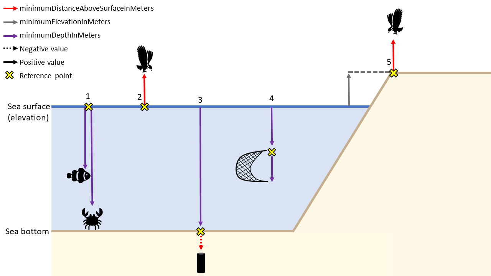

Darwin Core
Contents
Introduction to Darwin Core
Darwin Core is a body of standards (i.e., identifiers, labels, definitions) that facilitate sharing biodiversity informatics. It provides stable terms and vocabularies related to biological objects/data and their collection. Darwin Core is maintained by TDWG (Biodiversity Information Standards, formerly The International Working Group on Taxonomic Databases). Stable terms and vocabularies are important for ensuring the datasets in OBIS have consistently interpretable fields. By following Darwin Core standards, both data providers and users can be certain of the definition and quality of data.
History of Darwin Core and OBIS
The old OBIS schema was an OBIS extension to Darwin Core 1.2., which was based on Simple Darwin Core, a subset of Darwin Core which does not allow any structure beyond rows and columns. This old schema added some terms which were important for OBIS, but were not supported by Darwin Core at the time (e.g., start and end date and start and end latitude and longitude, depth range, lifestage, and terms for abundance, biomass and sample size).
In 2009, the Executive Committee of TDWG announced their ratification of an updated version of Darwin Core as a TDWG Standard. Ratified Darwin Core unifies specializations and innovations emerging from diverse communities, and provides guidelines for ongoing enhancement. The Darwin Core Quick Reference Guide links to TDWG’s term definitions and related practices for Ratified Darwin Core. We will discuss the relevance of terms in this guide further below.
In December 2013, the 3rd session of the IODE Steering Group for OBIS agreed to transition OBIS globally to the TDWG-Ratified version of Darwin Core, and the mapping of the (old) OBIS specific terms to Darwin Core can be found here.
Darwin Core (DwC) terms
DwC terms correspond to the column names of your dataset and can be grouped according to class type for convenience, e.g., Taxa, Occurrence, Record, Location, etc. It is important to use DwC field names because only columns using Darwin Core terms as headers will be recognized.
A list of all possible Darwin Core terms can be found on TDWG. However, OBIS does not parse all terms (note this doesn’t mean you cannot include them, they just will not be parsed when you publish to OBIS). Below is an overview of the most relevant Darwin Core terms to consider when contributing to OBIS, with guidelines regarding their use. We have also compiled a convenient checklist of OBIS-accepted terms, their DwC class type, and which OBIS file (Event Core, Occurrence, eMoF, etc.) it is likely to be found in.
Note that OBIS currently has seven required and one strongly recommended DwC term: occurrenceID, eventDate, decimalLongitude, decimalLatitude, scientificName, occurrenceStatus, basisOfRecord, scientificNameID (strongly recommended).
The following DwC terms are related to the Class Taxon:
- scientificName
- scientificNameID
- scientificNameAuthorship
- kingdom
- taxonRank
- taxonRemarks
The following DwC terms are related to the Class Identification:
- identifiedBy
- dateIdentified
- identificationReferences
- identificationRemarks
- identificationQualifier
- typeStatus
The following DwC terms are related to the Class Occurrence:
- occurrenceID
- occurrenceStatus
- recordedBy
- individualCount (OBIS recommends to add measurements to eMoF)
- organismQuantity (OBIS recommends to add measurements to eMoF)
- organismQuantityType (OBIS recommends to add measurements to eMoF)
- sex (OBIS recommends to add measurements to eMoF)
- lifeStage (OBIS recommends to add measurements to eMoF)
- behavior
- associatedTaxa
- occurrenceRemarks
- associatedMedia
- associatedReferences
- associatedSequences
- catalogNumber
- preparations
The following DwC terms are related to the Class Record level:
- basisOfRecord
- institutionCode
- collectionCode
- collectionID
- bibliographicCitation
- modified
- dataGeneralizations
The following DwC terms are related to the Class Location:
- decimalLatitude
- decimalLongitude
- coordinateUncertaintyInMeters
- geodeticDatum
- footprintWKT
- minimumDepthInMeters
- maximumDepthInMeters
- minimumDistanceAboveSurfaceInMeters
- maximumDistanceAboveSurfaceInMeters
- locality
- waterBody
- islandGroup
- island
- country
- locationAccordingTo
- locationRemarks
- locationID
The following DwC terms are related to the Class Event:
- parentEventID
- eventID
- eventDate
- type
- habitat
- samplingProtocol (OBIS recommends to add sampling facts to eMoF)
- sampleSizeValue (OBIS recommends to add sampling facts to eMoF)
- SampleSizeUnit (OBIS recommends to add sampling facts to eMoF)
- samplingEffort (OBIS recommends to add sampling facts to eMoF)
The following DwC terms are related to the Class MaterialSample:
- materialSampleID
Darwin Core guidelines
Taxonomy and identification
scientificName (required term) should always contain the originally recorded scientific name, even if the name is currently a synonym. This is necessary to be able to track back records to the original dataset. The name should be at the lowest possible taxonomic rank, preferably at species level or lower, but higher ranks, such as genus, family, order, class etc. are also acceptable. We recommend to not include authorship in scientificName, and only use scientificNameAuthorship for that purpose. The scientificName term should only contain the name and not identification qualifications (such as ?, confer or affinity), which should instead be supplied in the IdentificationQualifier term, see examples below. taxonRemarks can capture comments or notes about the taxon or name.
A WoRMS LSID should be added in scientificNameID (strongly recommended term), OBIS will use this identifier to pull the taxonomic information from the World Register of Marine Species (WoRMS) into OBIS and attach it to your dataset. This information includes:
- Taxonomic classification (kingdom through species)
- The accepted name in case of invalid names or synonyms
- AphiaID
- IUCN red list category
LSIDs are persistent, location-independent, resource identifiers for uniquely naming biologically significant resources. More information on LSIDs can be found at www.lsid.info. For example, the WoRMS LSID for Solea solea is: urn:lsid:marinespecies.org:taxname:127160, and can be found at the bottom of each WoRMS taxon page, e.g. Solea solea.
kingdom and taxonRank can help us in identifying the provided scientificName in case the name is not available in WoRMS. kingdom in particular can help us find alternative genus-species combinations and avoids linking the name to homonyms. Please contact the WoRMS data management team (info@marinespecies.org) in case the scientificName is missing in WoRMS. kingdom and taxonRank are not necessary when a correct scientificNameID is provided.
OBIS recommends providing information about how an identification was made, for example by which ID key, species guide or expert; and by which method (e.g morphology vs. genomics), etc. The person’s name who made the taxonomic identification can go in identifiedBy and when in dateIdentified. Use the ISO 8601:2004(E) standard for date and time, for instructions see Time. A list of references, such as field guides used for the identification can be listed in identificationReferences. Any other information, such as identification methods, can be added to identificationRemarks.
Examples:
| scientificNameID | scientificName | kingdom | phylum | class |
|---|---|---|---|---|
| urn:lsid:marinespecies.org:taxname:142004 | Yoldiella nana | Animalia | Mollusca | Bivalvia |
| urn:lsid:marinespecies.org:taxname:140584 | Ennucula tenuis | Animalia | Mollusca | Bivalvia |
| urn:lsid:marinespecies.org:taxname:131573 | Terebellides stroemii | Animalia | Annelida | Polychaeta |
| order | family | genus | specificEpithet | scientificNameAuthorship |
|---|---|---|---|---|
| Nuculanoida | Yoldiidae | Yoldiella | nana | (Sars M., 1865) |
| Nuculoida | Nuculidae | Ennucula | tenuis | (Montagu, 1808) |
| Terebellida | Trichobranchidae | Terebellides | stroemii | Sars, 1835 |
If the record represents a nomenclatural type specimen, the term typeStatus can be used, e.g. for holotype, syntype, etc.
In case of low confidence identifications, and the scientific name contains qualifiers such as cf., ? or aff., then this name should go in identificationQualifier, and scientificName should contain the name of the lowest possible taxon rank that refers to the most accurate identification. E.g. if the specimen was accurately identified down to genus level, but not species level, then the scientificName should contain the name of the genus, the scientificNameID should contain the LSID the genus and the identificationQualifier should contain the low confidence species name combined with ? or other qualifiers. The table below shows a few examples:
The use and definitions for additional ON signs (identificationQualifier) can be found in Open Nomenclature in the biodiversity era, which provides examples for using the main Open Nomenclature qualifiers associated with physical specimens. The publication Recommendations for the Standardisation of Open Taxonomic Nomenclature for Image-Based Identifications provides examples and definitions for identificationQualifiers for non-physical specimens (image-based).
Examples:
| scientificName | scientificNameAuthorship | scientificNameID | taxonRank | identificationQualifier | taxonConceptID |
|---|---|---|---|---|---|
| Pelagia | Péron & Lesueur, 1810 | urn:lsid:marinespecies.org:taxname:135262 | genus | gen. nov. | Pelagia gen. nov. |
| Pelagia benovici | Piraino, Aglieri, Scorrano & Boero, 2014 | urn:lsid:marinespecies.org:taxname:851656 | species | sp. nov | Pelagia benovici sp. nov |
| Gadus | Linnaeus, 1758 | urn:lsid:marinespecies.org:taxname:125732 | genus | cf. morhua | Gadus cf. morhua |
| Polycera | Cuvier, 1816 | urn:lsid:marinespecies.org:taxname:138369 | genus | cf. hedgpethi | Polycera cf. hedgpethi |
| Tubifex | Lamarck, 1816 | urn:lsid:marinespecies.org:taxname:137392 | genus | ? | Tubifex tubifex(Müller, 1774)? |
| Tubifex | Lamarck, 1816 | urn:lsid:marinespecies.org:taxname:137392 | genus | sp. inc. | Tubifex tubifex(Müller, 1774)sp. inc. |
| Brisinga | Asbjørnsen, 1856 | urn:lsid:marinespecies.org:taxname:123210 | genus | gen. inc. | Brisinga gen. inc. |
| Uroptychus compressus | Baba & Wicksten, 2019 | urn:lsid:marinespecies.org:taxname:1332465 | genus | sp. inc. | Uroptychus compressus sp. inc. |
| Eurythenes | S. I. Smith in Scudder, 1882 | urn:lsid:marinespecies.org:taxname:101607 | genus | sp. DISCOLL.PAP.JC165.674 | Eurythenes sp.DISCOLL.PAP.JC165.674 |
| Paroriza | Hérouard, 1902 | urn:lsid:marinespecies.org:taxname:123467 | genus | sp.[unique123]aff.pallens | Paroriza sp.[unique123]aff. pallens |
| Aristeidae | Wood-Mason in Wood-Mason & Alcock, 1891 | urn:lsid:marinespecies.org:taxname:106725 | family | stet. | Aristeidae stet. |
| Nematocarcinus | Milne-Edwards, 1881 | urn:lsid:marinespecies.org:taxname:107015 | genus | sp.indet. | Nematocarcinus sp.indet. |
| Brisinga | Asbjørnsen, 1856 | urn:lsid:marinespecies.org:taxname:123210 | genus | gen.inc. | Brisinga gen.inc. |
| Brisinga costata | Verrill, 1884 | urn:lsid:marinespecies.org:taxname:17825 | species | sp.inc. | Brisinga costata sp.inc. |
Occurrence
occurrenceID (required term) is an identifier for the occurrence record and should be persistent and globally unique. If the dataset does not yet contain (globally unique) occurrenceIDs, then they should be created. Guideline for ID creation can be found here
occurrenceStatus (required term) is a statement about the presence or absence of a taxon at a location. It is an important term, because it allows us to distinguish between presence and absence records. It is a required term and should be filled in with either present or absent.
A few terms related to quantity: organismQuantity and organismQuantityType, have been added to the TDWG ratified Darwin Core. This is a lot more versatile than the older individualCount field. However, OBIS recommends to use the Extended MeasurementorFact extension for quantitative measurements because of the standardization of terms and the fact that you can link these measurements to sampling events and factual sampling information.
Please take note that OBIS recommends all quantitative measurements and sampling facts to be placed in the ExtendedMeasurementOrFact extension and not in the Darwin Core files.
In the case specimens were collected and stored (e.g. museum collections), the catalogNumber and preparations terms can be used to provide the identifier for the record in the collection and to document the preparation and preservation methods. The term typeStatus see above (under identification) can be used in this context too.
Both associatedMedia, associatedReferences and associatedSequences are global unique identifiers or URIs pointing to respectively associated media (e.g. online image or video), associated literature (e.g. DOIs) or genetic sequence information (e.g. GenBANK ID).
associatedTaxa include a list (concatenated and separated) of identifiers or names of taxa and their associations with the Occurrence, e.g. the species occurrence was associated to the presence of kelp such as Laminaria digitata.
The recommended vocabulary for sex see BODC vocab : S10, for lifeStage see BODC vocab: S11, behavior (no vocab available), and occurrenceRemarks can hold any comments or notes about the Occurrence.
recordedBy can hold a list (concatenated and separated) of names of people, groups, or organizations responsible for recording the original Occurrence. The primary collector or observer, especially one who applies a personal identifier (recordNumber), should be listed first.
Example:
| collectionCode | occurrenceID | catalogNumber | occurrenceStatus |
|---|---|---|---|
| SluiceDock_benthic_1976/1981 | SluiceDock_benthic_1976_1 | SluiceDock_benthic_1976_1 | present |
| SluiceDock_benthic_1976/1981 | SluiceDock_benthic_1976_2 | SluiceDock_benthic_1976_2 | present |
| SluiceDock_benthic_1976/1981 | SluiceDock_benthic_1979-07/1980-06_1 | SluiceDock_benthic_1979-07/1980-06_1 | present |
Record level terms
basisOfRecord (required term) specifies the nature of the record, i.e. whether the occurrence record is based on a stored specimen or an observation. In case the specimen is collected and stored in a collection (e.g. at a museum, university, research institute), the options are:
PreservedSpecimene.g. preserved in ethanol, tissue etc.FossilSpecimena fossil, which allows OBIS to make the distinction between the date of collection and the time period the specimen was assumed aliveLivingSpecimenan intentionally kept/cultivated living specimen e.g. in an aquarium or culture collection.
In case no specimen is deposited, the basis of record is either HumanObservation (e.g bird sighting, benthic sample but specimens were discarded after counting), or MachineObservation (e.g. for occurrences based on automated sensors such as image recognition, etc). For records pertaining to genetic samples, basisOfRecord can be MaterialSample (e.g. in the DNA-derived data extension).
When the basisOfRecord is either a preservedSpecimen, LivingSpecimen or FossilSpecimen please also add the institutionCode, collectionCode and catalogNumber, which will enable people to visit the collection and re-examine the material. Sometimes, for example in case of living specimens, a dataset can contain records pointing to the origin, the in-situ sampling position as well as a record referring to the ex-situ collection. In this case please add the event type information in eventRemarks (see OBIS manual: event).
institutionCode identifies the custodian institute (often by acronym), collectionCode identifies the collection or dataset within that institute. Collections cannot belong to multiple institutes, so all records within a collection should have the same institutionCode. The collectionID is an identifier for the record within the dataset or collection.
bibliographicCitation allows for providing different citations on record level, while a single citation for the entire dataset can and should be provided in the metadata (see EML). The citation at record level can have the format of a chapter in a book, where the book is the dataset citation. The record citation will have preference over the dataset citation. We do not, however, recommend to create different citations for every record, as this will explode the number of citations and will hamper the re-use of data.
modified is the most recent date-time on which the resource was changed. It is required to use the ISO 8601:2004(E) standard, for instructions see Time.
dataGeneralizations refers to actions taken to make the shared data less specific or complete than in its original form. Suggests that alternative data of higher quality may be available on request. This can be the case for occurrences of vulnerable or endangered species and there positions are converted to the center of grid cells.
Location
decimalLatitude and decimalLongitude (required terms) are the geographic latitude and longitude (in decimal degrees), using the spatial reference system given in geodeticDatum of the geographic center of a Location. The number of decimals should be appropriate for the level of uncertainty in coordinateUncertaintyInMeters (at least within an order of magnitude). coordinateUncertaintyInMeters is the radius of the smallest circle around the given position containing the whole location. Regarding decimalLatitude, positive values are north of the Equator, negative values are south of it. All values lie between -90 and 90, inclusive. Regarding decimalLongitude, positive values are east of the Greenwich Meridian, negative values are west of it. All values lie between -180 and 180, inclusive.
In OBIS, the spatial reference system to be documented in geodeticDatum is EPSG:4326. Coordinates in degrees/minutes/seconds can be converted to decimal degrees using our coordinates tool. We also provide a tool to check coordinates or to determine coordinates for a location (point, transect or polygon) on a map. This tool also allows geocoding location names using marineregions.org.
The name of the place or location can be provided in locality, and if possible linked by a locationID using a persistent ID from a gazetter, such as the MRGID from MarineRegions. If the species occurrence only contains the name of the locality, but not the exact coordinates, we recommend using a geocoding service to obtain the coordinates. Marine Regions has a search interface for geographic names, and provides coordinates and often precision in meters, which can go into coordinateUncertaintyInMeters. Another option is to use the Getty Thesaurus of Geographic Names or Google Maps: after looking up a location, the decimal coordinates can be found in the page URL. Additional information about the locality can also be stored in DwC terms such as waterBody, islandGroup, island and country. locationAccordingTo should provide the name of the gazetteer that is used to obtain the coordinates for the locality.
locationID is an identifier for the set of location information (e.g. station ID, or MRGID from marineregions), for example the Balearic Plain has MRGID: http://marineregions.org/mrgid/3956.
A Well-Known Text (WKT) representation of the shape of the location can be provided in footprintWKT. This is particularly useful for tracks, transects, tows, trawls, habitat extent or when an exact location is not known. WKT strings can be created using our WKT tool. This tool also calculates a midpoint and a radius, which can then be added to decimalLongitude, decimalLatitude, and coordinateUncertaintyInMeters respectively. There is also an R tool to calculate the centroid and radius for WKT polygons. wktmap.com can be used to visualize and share WKT strings.
Some examples of WKT strings:
LINESTRING (30 10, 10 30, 40 40)
POLYGON ((30 10, 40 40, 20 40, 10 20, 30 10))
MULTILINESTRING ((10 10, 20 20, 10 40),(40 40, 30 30, 40 20, 30 10))
MULTIPOLYGON (((30 20, 45 40, 10 40, 30 20)),((15 5, 40 10, 10 20, 5 10, 15 5)))Example:
| decimalLatitude | decimalLongitude | geodeticDatum | coordinateUncertaintyInMeters | footprintWKT | footprintSRS |
|---|---|---|---|---|---|
| 38.698 | 20.95 | EPSG:4326 | 75033.17 | LINESTRING (20.31 39.15, 21.58 38.24) | EPSG:4326 |
| 42.72 | 15.228 | EPSG:4326 | 154338.87 | LINESTRING (16.64 41.80, 13.82 43.64) | EPSG:4326 |
| 39.292 | 20.364 | EPSG:4326 | 162083.27 | LINESTRING (19.05 40.34, 21.68 38.25) | EPSG:4326 |
Keep in mind while filling in minimumDepthInMeters and maximumDepthInMeters that this should be the depth at which the sample was taken and not the water column depth at that location. When fillling in any depth fields (minimumDepthInMeters, maximumDepthInMeters, minimumDistanceAboveSurfaceInMeters, and maximumDistanceAboveSurfaceInMeters), you should also consider which information is needed to fully understand the data. In most cases (e.g. scenario 1 and 4 in the figure below), providing minimumDepthInMeters and maximumDepthInMeters is sufficient for observations of organisms at particular depths. However, in cases where an occurrence is above the sea surface, e.g. flying birds (scenario 2 and 5), you should populate minimumDistanceAboveSurfaceInMeters, maximumDistanceAboveSurfaceInMeters, and, where relevant, you should also include minimumElevationInMeters and maximumElevationInMeters.
The minimumDistanceAboveSurfaceInMeters and maximumDistanceAboveSurfaceInMeters is the distance, in meters, above or below a reference surface or reference point. The reference surface is determined by the depth or elevation. If the depth and elevation are 0, then the reference surface is the sea surface. If a depth is given, the reference surface is the location of the depth. This can be especially useful for sediment cores taken from the sea bottom (scenario 3 in figure below). If no depth is given, then the elevation is the reference surface (scenario 5).

Depth scenario examples:
| Scenario | minimumDepthInMeters | maximumDepthInMeters | minimumDistanceAboveSurfaceInMeters | maximumDistanceAboveSurfaceInMeters | minimumElevationInMeters | maximumElevationInMeters |
|---|---|---|---|---|---|---|
| 1 | 40, 90 | 50, 100 | - | - | 0 | 0 |
| 2 | 0 | 0 | 10 | 15 | 0 | 0 |
| 3 | 100 | 100 | 0 | -1.5 | 0 | 0 |
| 4 | 20 | 22 | - | - | 0 | 0 |
| 5 | 0 | 0 | 10 | 15 | 10 | 10 |
Event
eventID is an identifier for the sampling or observation event. parentEventID is an identifier for a parent event, which is composed of one or more sub-sampling (child) events (eventIDs). See identifiers for details on how these terms can be constructed.
habitat is a category or description of the habitat in which the Event occurred (e.g. benthos, seamount, hydrothermal vent, seagrass, rocky shore, intertidal, ship wreck etc.)
Time
The date and time at which an occurrence was recorded goes in eventDate. This term uses the ISO 8601 standard and OBIS recommends using the extended ISO 8601 format with hyphens.

More specific guidelines on formatting dates and times can be found in the Common Data formatting issues page
Sampling
Information on sampleSizeValue and sampleSizeUnit is very important when an organism quantity is specified. However, with OBIS-ENV-DATA it was felt that the extended MeasurementorFact (eMoF) extension would be better suited than the DwC Event Core to store the sampled area and/or volume because in some cases sampleSize by itself may not be detailed enough to allow interpretation of the sample. For instance, in the case of a plankton tow, the volume of water that passed through the net is relevant. In case of Niskin bottles, the volume of sieved water is more relevant than the actual volume in the bottle. In these examples, as well as generally when recording sampling effort for all protocols, eMoF enables greater flexibility to define parameters, as well as the ability to describe the entire sample and treatment protocol through multiple parameters. eMoF also allows you to standardize your terms to a controlled vocabulary.
The next chapter deals with the metadata (description of the dataset) in Ecological Metadata Language.